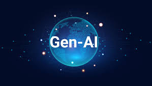

A vehicle and person recognition system for use by law enforcement is demonstrated at last year’s GPU Technology Conference in Washington, D.C., which highlights new uses for artificial intelligence and deep learning. (Saul Loeb/AFP/Getty Images) Digital life is augmenting human capacities and disrupting eons-old human activities. Code-driven systems have spread to more than half of the world’s inhabitants in ambient information and connectivity, offering previously unimagined opportunities and unprecedented threats. As emerging algorithm-driven artificial intelligence (AI) continues to spread, will people be better off than they are today? Some 979 technology pioneers, innovators, developers, business and policy leaders, researchers and activists answered this question in a canvassing of experts conducted in the summer of 2018. The experts predicted networked artificial intelligence will amplify human effectiveness but also threaten human autonomy, agency and capabilities. They spoke of the wide-ranging possibilities; that computers might match or even exceed human intelligence and capabilities on tasks such as complex decision-making, reasoning and learning, sophisticated analytics and pattern recognition, visual acuity, speech recognition and language translation. They said “smart” systems in communities, in vehicles, in buildings and utilities, on farms and in business processes will save time, money and lives and offer opportunities for individuals to enjoy a more-customized future. Many focused their optimistic remarks on health care and the many possible applications of AI in diagnosing and treating patients or helping senior citizens live fuller and healthier lives. They were also enthusiastic about AI’s role in contributing to broad public-health programs built around massive amounts of data that may be captured in the coming years about everything from personal genomes to nutrition. Additionally, a number of these experts predicted that AI would abet long-anticipated changes in formal and informal education systems. Yet, most experts, regardless of whether they are optimistic or not, expressed concerns about the long-term impact of these new tools on the essential elements of being human. All respondents in this non-scientific canvassing were asked to elaborate on why they felt AI would leave people better off or not. Many shared deep worries, and many also suggested pathways toward solutions. The main themes they sounded about threats and remedies are outlined in the accompanying table.
The updates related to AI technologies
Security news coverage encompasses investigative cybersecurity reporting and analysis on the latest security breaches, hacks and cyberattacks around the globe.

The destruction cause by AI
MAJOR UPDATES ON ARTIFICIAL INTELLIGENCE
AI in Environmental Restoration: Reviving Coral Reefs
Coral reefs, vital to marine ecosystems, have been facing severe threats due to climate change and pollution. While humanity has been employing a variety of solutions for coral restoration, AI will become a transformative force in helping us aid in the restoration of these essential marine habitats.
Artificial intelligence firms lead Chinese shares higher
What they saw transported them 10,000 miles across the world, to Zambia, and then 1 more mile straight down into Earth. A rich lode of copper, deep in the bedrock, appeared before them, its contours revealed by a complex artificial intelligence-driven technology they had been painstakingly building for years.
AI-Powered Personalized Education
An AI system, equipped with advanced natural language processing and machine learning, will be launched to create personalized learning experiences. Some of the pieces exist as organic, function specific platforms. Today, we have AI tools like Cerebry, an AI math teaching assistant, and Khanmigo, an AI tutor. However, 2024 will mark the consolidation, integration, and gap fulfillment to develop true end-to-end AI educational systems. These AI platforms will analyze a student’s learning style, pace, and comprehension level to tailor educational content accordingly and create an individually customized curriculum for each student.
AI in Predictive Healthcare: Personalized Treatment Plans
The healthcare industry has always sought ways to provide more accurate and personalized care. In 2024, AI will make a substantial contribution in this area by enabling the creation of predictive, personalized treatment plans.
TRENDING TOPICS ON ARTIFICIAL INTELLIGENCE
Ex-OpenAI researcher to start new company focused on AI teaching assistants
Andrej Karpathy, an OpenAI cofounder and former Tesla executive, said that he is starting his own AI education company that would focus on developing personalised AI teaching assistants for students on-demand.
Anthropic’s Claude AI chatbot now has an Android app
Anthropic, the company behind the popular Claude AI chatbot has launched an Android app. Available for free on the Google Play Store, the company says that the new app gives access to its newest and most powerful large language model – Claude 3.5 Sonnet.
AI law may not prescribe penal consequences for violations

The Ministry of Electronics and IT (MeitY) is working on an artificial intelligence (AI)-specific law, under which it may not prescribe any penal consequences for violations, in a recognition that the technology’s benefits outweigh its downsides, The Indian Express has learnt.
These AI skills are ruling the 2024 job market

With growing India’s interest in AI, introduction to GenAI, Prompt Engineering for ChatGPT, Generative AI for Everyone, GenAI large language models and Google’s AI Essentials are the top courses harnessed by Indian learners.

MACHINE LEARNING
$ 55.00 USD
CLOUD COMPUTING
$ 50.00 USD
NATURAL LANGUAGE PROCESSING
$ 34.00 USD
DEEP LEARNING
$ 75.00 USD

GEN AI
$ 55.00 USD
OPEN AI
$ 50.00 USD
META AI
$ 34.00 USD

GEMINI AI
$ 75.00 USD
ARTICLES
Artificial Intelligence and the Future of Humans
Experts say the rise of artificial intelligence will make most people better off over the next decade, but many have concerns about how advances in AI will affect what it means to be human, to be productive and to exercise free will
Qualities of artificial intelligence
Although there is no uniformly agreed upon definition, AI generally is thought to refer to “machines that respond to stimulation consistent with traditional responses from humans, given the human capacity for contemplation, judgment and intention.”3 According to researchers Shubhendu and Vijay, these software systems “make decisions which normally require [a] human level of expertise” and help people anticipate problems or deal with issues as they come up.4 As such, they operate in an intentional, intelligent, and adaptive manner.
Artificial intelligence algorithms are designed to make decisions, often using real-time data. They are unlike passive machines that are capable only of mechanical or predetermined responses. Using sensors, digital data, or remote inputs, they combine information from a variety of different sources, analyze the material instantly, and act on the insights derived from those data. With massive improvements in storage systems, processing speeds, and analytic techniques, they are capable of tremendous sophistication in analysis and decisionmaking.
Applications in diverse sectors
AI is not a futuristic vision, but rather something that is here today and being integrated with and deployed into a variety of sectors. This includes fields such as finance, national security, health care, criminal justice, transportation, and smart cities. There are numerous examples where AI already is making an impact on the world and augmenting human capabilities in significant ways.
Meanwhile, a McKinsey Global Institute study of China found that “AI-led automation can give the Chinese economy a productivity injection that would add 0.8 to 1.4 percentage points to GDP growth annually, depending on the speed of adoption.”8 Although its authors found that China currently lags the United States and the United Kingdom in AI deployment, the sheer size of its AI market gives that country tremendous opportunities for pilot testing and future development.
Policy, regulatory, and ethical issues
These examples from a variety of sectors demonstrate how AI is transforming many walks of human existence. The increasing penetration of AI and autonomous devices into many aspects of life is altering basic operations and decisionmaking within organizations, and improving efficiency and response times.
At the same time, though, these developments raise important policy, regulatory, and ethical issues. For example, how should we promote data access? How do we guard against biased or unfair data used in algorithms? What types of ethical principles are introduced through software programming, and how transparent should designers be about their choices? What about questions of legal liability in cases where algorithms cause harm? The key to getting the most out of AI is having a “data-friendly ecosystem with unified standards and cross-platform sharing.” AI depends on data that can be analyzed in real time and brought to bear on concrete problems. Having data that are “accessible for exploration” in the research community is a prerequisite for successful AI development.
FOUNDERS AND TEAM

Alan Turing

John McCarthy

Marvin Minsky

Herbert Simon

Arthur Samuel